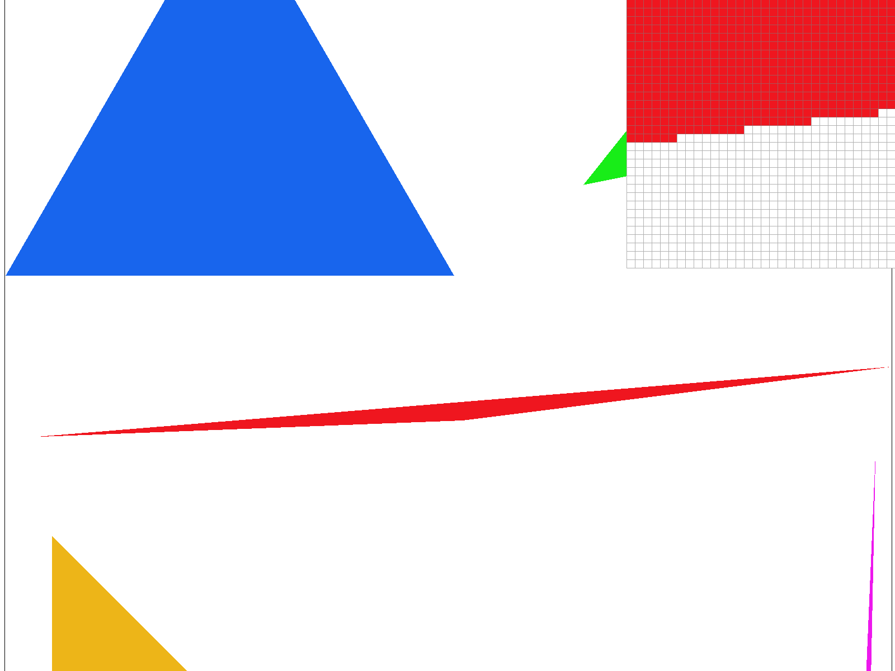
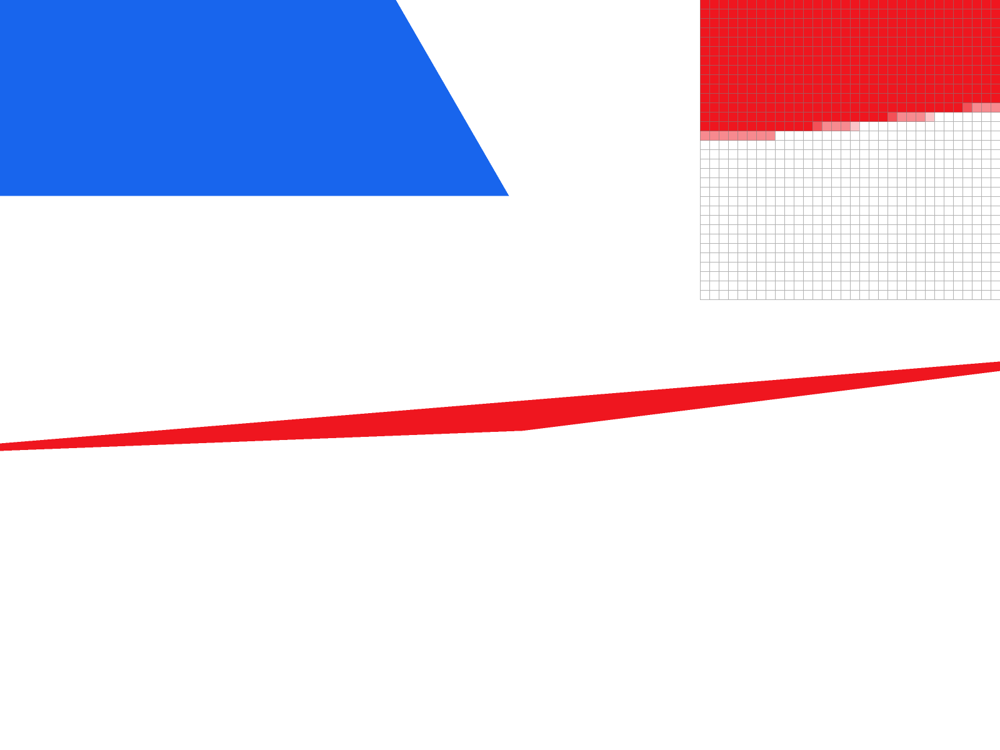
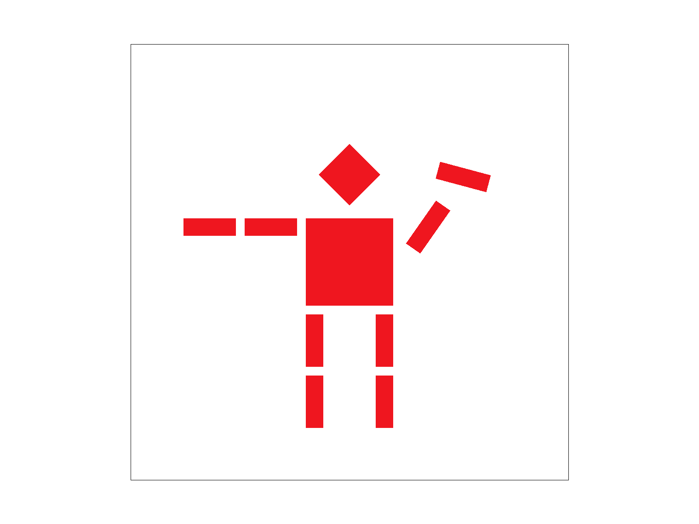
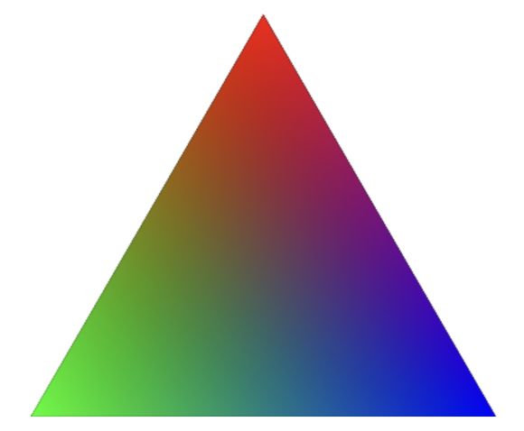
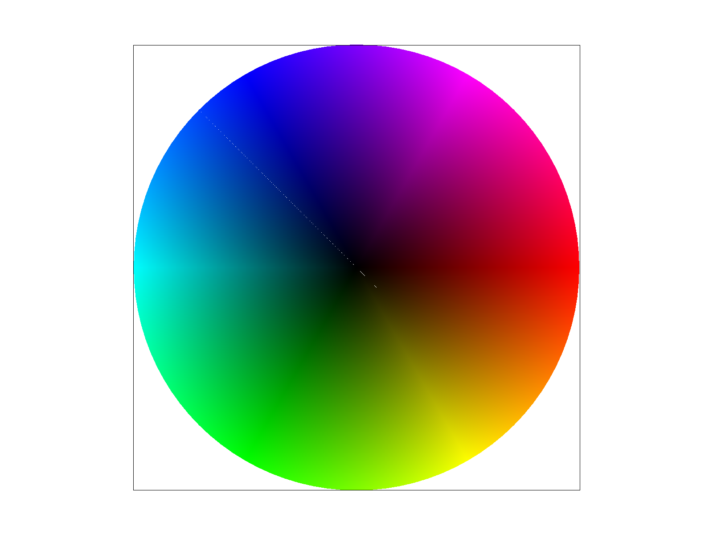
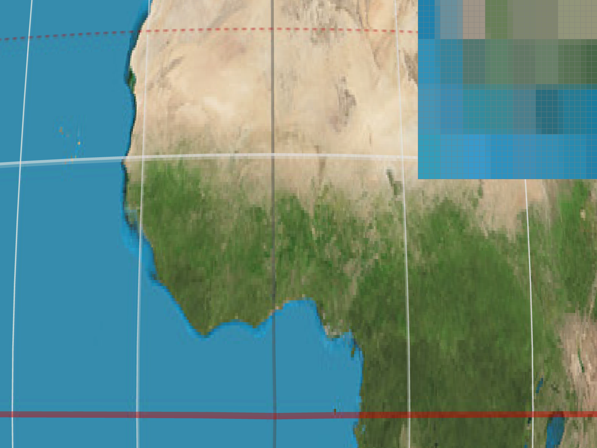
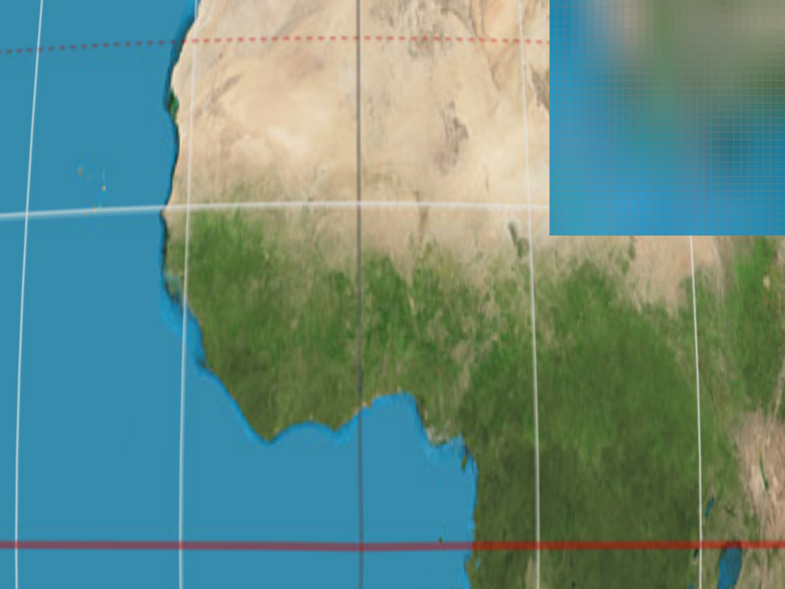
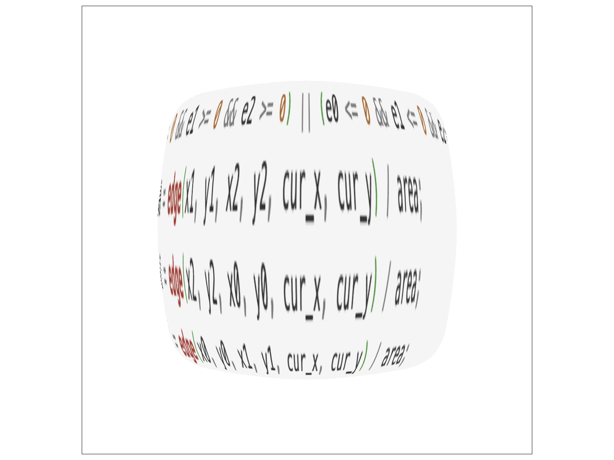

CS184/284A Spring 2026 Homework 1 Write-Up
Link to webpage: https://cal-cs184-student.github.io/hw-webpages-0315jaewon/
Link to GitHub repository: https://github.com/cal-cs184-student/hw-webpages-0315jaewon
Overview
In this assignment, I implemented a full triangle rasterization and texture mapping pipeline, starting with edge-based triangle coverage tests and building up to supersampling, barycentric interpolation, pixel sampling, and mipmapping with different level selection strategies. What stood out to me most was how many visual artifacts, like jagged edges, come from sampling issues rather than “bugs” in geometry. Seeing how supersampling improves edge smoothness, how bilinear filtering reduces blockiness, and how mipmapping stabilizes textures when zoomed out helped me understand how these techniques address different problems. Overall, this assignment gave me a clearer picture of how modern rendering systems balance image quality and performance through careful use of interpolation and filtering.Task 1: Drawing Single-Color Triangles
How I rasterize triangles:
I first begin by computing the bounding box based on the triangle’s vertices into integer pixel coordinates, by computing the min, max of x and y values (with a safety check to make sure it doesn’t go out of bounds). Then, for every pixel in this box, I consider a sample point at the center of the box, which as mentioned in lecture is computed by doing (x + 0.5, y + 0.5). I wrote a helper function that would help me determine (based on the sign) which side of an edge the specific point in context lies on. I utilize this helper to test every point inside the aforementioned box, checking if it lies on the same side of all edges. Since triangle vertices can be counterclockwise or clockwise, I determine that the point is inside the triangle if all three values are positive or all three are negative, and color this pixel if this is the case.
Why this algorithm is no worse than checking every sample within the bounding box of the triangle:
This is exactly what my algorithm is doing, since I am computing the bounding box of the triangle and check if the point is on the same side of all the three edges of the triangle. Given that I am checking every pixel in the bounding box one time, it is not worse runtime wise. Additionally, it is not worse because I am not examining and pixels outside of it.
Here is an example 2x2 gridlike structure using an HTML table. Each tr is a row and each td is a column in that row. You might find this useful for framing and showing your result images in an organized fashion.
|
 |
Task 2: Antialiasing by Supersampling
Why is supersampling useful:
Previously in task 1, only the center of a pixel was used to determine whether the pixel is on or off, meaning pixels on the edge were either on or off. This caused jagged edges downstream, which is an error that supersampling fixes. Essentially the way I think about supersampling is almost like taking a weighted average within a pixel, which allows for certain edge pixels that have higher coverage to be colored greater than other edge pixels which have less coverage. Visually, this results in a more smoother image, specifically on the edges.
Algorithms / how I implemented supersampling:
To implement supersampling, I stored sample_rate colors per pixel in sample_buffer. The key conversion I utilized was using base = (y * width + x) * sample_rate, which allows for a subsample (i, j) to map to: base + (j * N + i). With so many more pixels now under consideration, I test all subsamples using the same-side edge test I mentioned above in Task 1. After computing all the rasterizations, I modified resolve_to_framebuffer() to average sample_rate subsamples colors for each pixel, which is converted to an 8-bit RGB and written to rgb_framebuffer_target. Additionally, the spec mentioned that lines and points are not antialiased but still must draw correctly, so I made the function fill_pixel(x, y, c) fill all subsamples of that pixel with the same color c, meaning a pixel is always fully colored even after the subsampling average.
At sample rate 1, edge pixels are decided by one center sample, so thin triangles and diagonal boundaries show strong jaggedness. At 4, each pixel uses a 2x2 grid so coverage is quantized into quarter steps, which noticeably smooths edges but still shows some staircase like pattern. At 16 (4x4), coverage is much finer, so boundary intensity changes more gradually and skinny features are represented more faithfully.

Task 3: Transforms
What I wanted to make the cubeman do:
I wanted to make the cubeman wave, and thought about how I could represent a wave by moving just the two blocks that form his right arm

Task 4: Barycentric coordinates
Explain Barycentric coordinates in your own words:
Barycentric coordinates essentially indicate the mix of each vertex or how much each vertex contributes to a specific point. In the RGB triangle image below (which I found online), the top vertex is red, the bottom left vertex is green, and the bottom right vertex is blue. The smooth blend can be observed because every pixel is essentially barycentric coordinates which correspond directly to the weights of each vertex color (and their contribution respectively).


Task 5: "Pixel sampling" for texture mapping
Explain pixel sampling and how I implemented it to perform texture mapping:
Pixel sampling is the process of evaluating a texture image at a continuous texture coordinate (I'll call (u,v)), by reconstructing a value from a discrete grid of texels. As described in lecture, applying a texture is a resampling problem: we start with a sampled 2D signal (the texture), reconstruct a continuous approximation using a reconstruction filter, and then evaluate it at the desired location. In my implementation, once a triangle sample passes the same side test (used in previous tasks), I compute barycentric coordinates to interpolate the vertex texture coordinates, producing a coordinate point (u,v) for that screen sample. I then convert (u,v) into texture space coordinates and call either sample_nearest or sample_bilinear depending on the selected pixel sampling mode.
Discuss the two different sampling methods, nearest and bilinear:
Nearest sampling simply chooses the texel closest to (u,v), which is similar to a box reconstruction filter and can produce jagged images as we saw in Task 1. Bilinear sampling on the other hand fetches the four surrounding texels and linearly interpolates between them.
Discuss differences between the two sampling methods in the context of the images and when their differences are prominent:
As we can see in the four different screenshots in different scenarios, namely: nearest sampling at 1 pixel, nearest sampling at 16 pixels, bilinear sampling at 1 pixel, and bilinear sampling at 16 pixels. Bilinear sampling is able to outperform nearest sampling in that it is much more smoother visually, as seen especially in the edges of the continents where the color changes from land to water. Bilinear at 1 pixel is already smoother than nearest sampling at 16 pixels, and bilinear sampling at 16 pixels achieves the cleanest result by combining smoother texture from this sampling method alongside 16 pixels of smooth geometric edges.


Task 6: "Level Sampling" with mipmaps for texture mapping
Explain level sampling in your own words and describe how you implemented it:
Level sampling determines which resolution of a texture (i.e. which mipmap level) should be used when shading in a pixel. A single screen pixel can correspond to a large region in texture space, for instance if the textured surface is far away or at a specific angle. In my implementation, I compute texture coordinates using barycentric interpolation, and then estimate the texture space derivatives (using the equations mentioned in lecture). I then scale these derivatives using full resolution texture dimensions, and then compute the appropriate mip level. Based on the selected node, I either use level 0, rounded to the nearest integer level, or linear interpolation between adjacent levels.
Tradeoffs between pixel sampling, level sampling, or number of samples per pixel:
Pixel sampling determines how texels are reconstructed within a mip level: nearest is fastest (but blocky and jagged), while bilinear is slightly slower but smoother upon magnification. Level sampling determines how well minification is handled: L_ZERO is sharp but aliases heavily, whereas L_NEAREST and L_LINEAR reduce shimmering at a modest performance cost (but require extra memory for storing mipmaps). Increasing the number of samples per pixel (supersampling) improves geometric edge quality and can reduce some texture aliasing, but it is computationally expensive and increases memory usage proportionally, as one would expect. Overall, mipmapping provides the best improvement-to-cost ratio for reducing texture aliasing, while bilinear filtering improves smoothness, and supersampling provides the strongest but most expensive general antialiasing.


